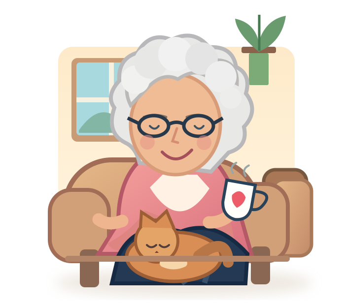

Movement
A tiny beacon on Mum's walking trolley and receivers around the house may help estimate which room the trolley is in and when it moves.
Peace of mind for worried children.
A little dark humour. A lot of love. And an experiment in using everyday activity to help us know when to check in on someone we care about.
A real DIY experiment, not a product for sale

Independent living, with a little extra reassuranceWhen somebody lives alone, it's natural to wonder whether they're up, about and doing okay. What if the ordinary things they already do could offer a little reassurance, without cameras in the living room or another gadget they have to remember to wear?
A tiny beacon on Mum's walking trolley and receivers around the house may help estimate which room the trolley is in and when it moves.
A press of the lamp button is a real, timestamped interaction. Even simple daily actions can provide useful context.
Door contacts, doorbells and compatible devices may help build a timeline of visitors and household activity.
Combine separate clues into a clearer picture, so unusual quiet periods can prompt a thoughtful human check-in.
It's important to say what this doesn't do: a sensor cannot tell whether a person is alive, safe or well. The aim is awareness and reassurance, not proof or emergency detection.
The actual HomePulse design uses a few little receivers, a beacon on the trolley and a Raspberry Pi to put the clues together. You don't need to understand the programming to understand the idea.
Bluetooth receiver Walking trolley + beacon
Illustration only. Receivers estimate the trolley's room, not a person's exact position.
It sends a Bluetooth signal. Mum doesn't need a phone, an app, or to press anything for this part.
Small USB-powered devices compare signals to estimate the room. Real homes need testing and calibration.
A tiny local computer can combine movement clues with other events, like the lamp button or front-door activity.
The goal is a simple view of recent activity, with clear timestamps, uncertainty and device health.
You don't need a minute-by-minute surveillance feed. Often you just want to know whether anything has happened today, what kind of activity it was, and how recently it happened.
We're exploring ways to show the last observation, the last likely resident activity, and the last deliberate interaction as different facts. That distinction matters.
It's not a question anyone particularly enjoys hearing from their mum. But it's a completely understandable thing to worry about when you live alone.
So instead of treating it as an unsolvable worry, I started wondering what everyday evidence we could gather without asking Mum to change how she lives. Her walking trolley, a few Bluetooth receivers, a lamp button and a little computer became the starting point for HomePulse.
Then some friends, facing similar worries about their own parents, gave the whole idea its gloriously inappropriate nickname. It stuck.
The name is a joke. The care behind it isn't.
Less for Mum to carry, remember or learn. The technology should fit her life, not the other way around.
Use modest, useful signals and keep detailed data local where practical. This doesn't need indoor cameras.
Visitors, missing sensors and an unmoving trolley can all mislead. A timeline is a clue, not a verdict.
This is an ongoing experiment, and the hard parts are genuinely hard: different homes, Bluetooth calibration, integrations, reliability and support. We're sharing the thinking so someone else might build their own version, improve it, or simply realise that there are options worth exploring.
DIY inspiration, not a setup guide for a guaranteed safety device.
HomePulse is an experimental home-awareness project, not a medical device, fall detector, life-sign monitor or emergency-response service. Activity can be missed or misattributed, and a person can be unwell despite recent activity. If you're worried about somebody, contact them or arrange a check. In an emergency, use the appropriate emergency services.